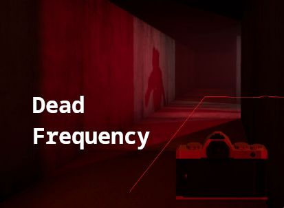
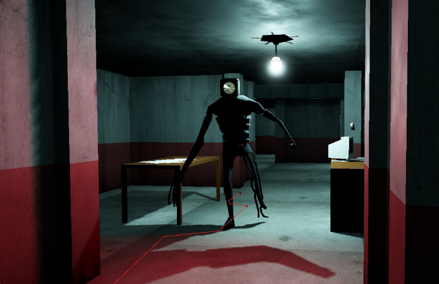

You find yourself locked in a facility. You must use analog tech to escape. Can you figure it out? Good thing someone or something seems to be helping you out. A voice on a dead frequency.
Added occlusion culling to improve performance.
Added a volumetric fog setting.
Turned off SSAO, since it's already baked into version 1.0.
Turned off SDFGI; version 1.0 uses lightmap GI.
Fixed hotbar and inventory ordering.
Possibly fixed an issue that caused the AI to get stuck in the floor.
